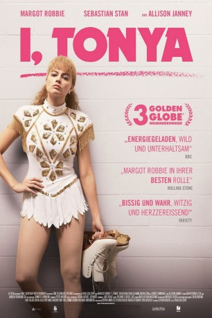

#9368 I, Tonya
Auszeichnungen: 1 Oscars gewonnen für 2 Oscars nominiert 1 GoldenGlobes gewonnen 1 BAFTA-Awards gewonnen
 gesehen am 15.08.2018
gesehen am 15.08.2018
 
 IMDB-Wertung: 7.5 / 10
IMDB-Wertung: 7.5 / 10  Metascore: 77
Metascore: 77 
Tonya Harding (Margot Robbie) ist unter ärmsten Bedinungen aufgewachsen, doch wurde sie von ihrer wenig liebevollen Mutter LaVona Golden (Allison Janney) schon früh auf eine Karriere im Eiskunstlaufen vorbereitet. Zwar hat es Tonya mit ihrem aggressiven Auftreten, ihren selbstgenähten Kostümen und ihrer unkoventionellen Technik nicht leicht, doch ihr Talent ist unbestreitbar, ist sie doch die einzige Frau, der im Rahmen eines Wettbewerbs ein dreifacher Axel gelingt. Als sie sich langsam dem Höhepunkt ihrer Karriere nähert, wird ihre Konkurrentin Nancy Kerrigan (Caitlin Carver) bei einem Angriff verletzt und muss aus den amerikanischen Meisterschaften ausscheiden. Wie sich jedoch herausstellen soll, steckt Hardings Ex-Mann Jeff Gillooly (Sebastian Stan) hinter dem Angriff, weswegen ihr der gerade gewonnene Titel aberkannt wird und ihre Karriere urplötzlich beendet ist...
Jahr: 2017
Dauer: 119 Minuten
FSK: 12
Land: USA Studio: NeonTonspuren: DTS - ,
Untertitel: Deutsch,
Auflösung: 1080p (1920x808) Größe: 9082 MB
Genre: Drama, Komödie, Sport, Biographie
Regisseur: Craig Gillespie
Drehbuch: Steven Rogers
Soundtrack: Peter Nashel
Darsteller:
 Margot Robbie als Tonya
Margot Robbie als Tonya Sebastian Stan als Jeff
Sebastian Stan als Jeff Allison Janney als LaVona
Allison Janney als LaVona Julianne Nicholson als Diane Rawlinson
Julianne Nicholson als Diane Rawlinson Paul Walter Hauser als Shawn
Paul Walter Hauser als Shawn Bobby Cannavale als Martin Maddox
Bobby Cannavale als Martin Maddox Bojana Novakovic als Dody Teachman
Bojana Novakovic als Dody Teachman- Caitlin Carver als Nancy Kerrigan
 Mckenna Grace als Tonya (8-12 Yrs)
Mckenna Grace als Tonya (8-12 Yrs) Suehyla El-Attar als Skater Mom
Suehyla El-Attar als Skater Mom Jason Davis als Al
Jason Davis als Al- Mea Allen als Snooty Girl
- Cory Chapman als Chris
- Amy Fox als Skating Judge
 Cara Mantella als Choreographer
Cara Mantella als Choreographer Joshua Mikel als Heckling Spectator
Joshua Mikel als Heckling Spectator- Lynne Ashe als Shawn's Mother
- Steve Wedan als Shawn's Father
- Davin Allen Grindstaff als USFS Judge
- Daniel Thomas May als Sheriff
 Anthony Reynolds als Derrick Smith
Anthony Reynolds als Derrick Smith- Ricky Russert als Shane Stant
- Al Bianchi als Sports Bar Manager
 Miles Mussenden als Policeman #2
Miles Mussenden als Policeman #2- Annie Livingston als 6 Year Old Girl
- Jan Harrelson als FBI Agent #1
 Luray Cooper als FBI Agent #2
Luray Cooper als FBI Agent #2 Dan Triandiflou als Bob Rawlinson
Dan Triandiflou als Bob Rawlinson- Kelly O'Neal als Interviewer
- Cecil Love als Bailiff
- Alphie Hyorth als Judge Londer
- Sean Goulding als Restaurant Employee
 John Jacob Anderson als Boxing Fan (uncredited)
John Jacob Anderson als Boxing Fan (uncredited)- Patti Brindley als Judge / Press (uncredited)
 Ruby Bustamante als Spectator (uncredited)
Ruby Bustamante als Spectator (uncredited) Lucie Carroll als Judge (uncredited)
Lucie Carroll als Judge (uncredited) Jamel Chambers als Albertville Spectator (uncredited)
Jamel Chambers als Albertville Spectator (uncredited) John Crow als CNN Reporter (uncredited)
John Crow als CNN Reporter (uncredited)- Ann Curry als Herself (archive footage) (uncredited)
 Laura Distin als Boxing Spectator (uncredited)
Laura Distin als Boxing Spectator (uncredited) Catherine Dyer als CBS Reporter (uncredited)
Catherine Dyer als CBS Reporter (uncredited)- Robin Dyke als Olympic Judge (uncredited)
- Kayla Ellenwood als Ballerina (uncredited)
 Jeff Glover als Boxing Referee (uncredited)
Jeff Glover als Boxing Referee (uncredited)- Tonya Harding als Herself (archive footage) (uncredited)
- Adrienne Johnson als Diner Patron (uncredited)
- Jamie King als Spectator (uncredited)
- Kris Kozlowski als Boxing Referee (uncredited)
 Matt Lauer als Himself (archive footage) (uncredited)
Matt Lauer als Himself (archive footage) (uncredited)- Jason MacDonald als Hard Copy Reporter (uncredited)
Datei: X:\2017(G-M)\I, Tonya (2017, FSK12, 1920x808).mkv seit 15.08.2018
Festplatte: HD 2017(A-Z)-2018(A-F)
 Es gibt insgesamt 148 Filme in der Gruppe '2017(G-M)'
Es gibt insgesamt 148 Filme in der Gruppe '2017(G-M)'